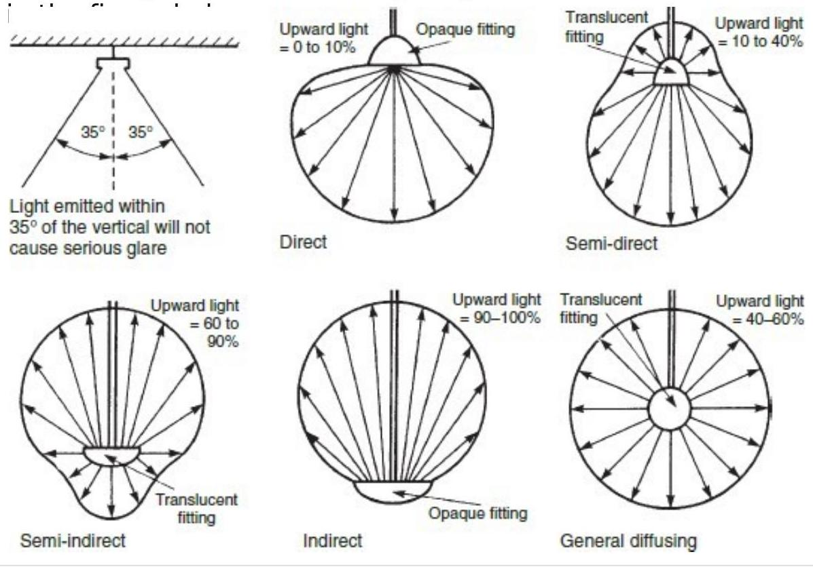
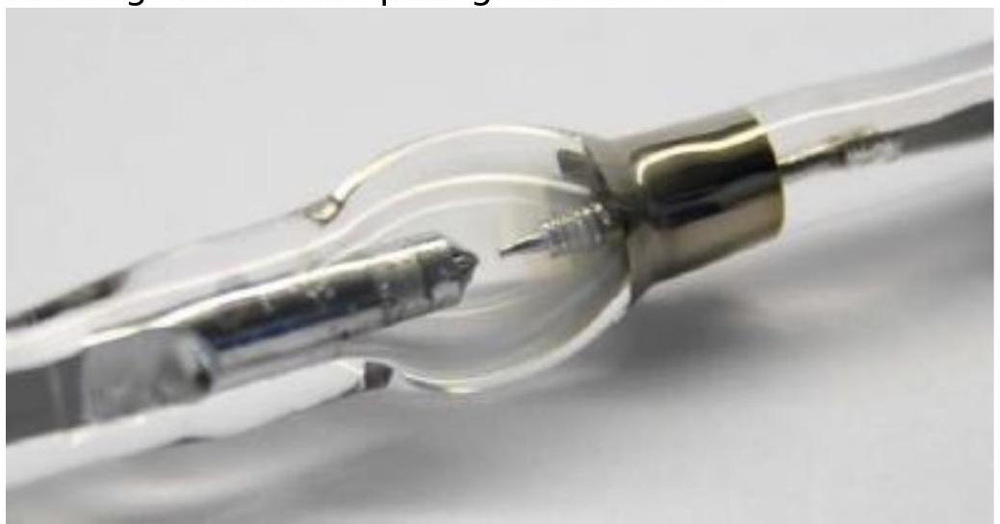
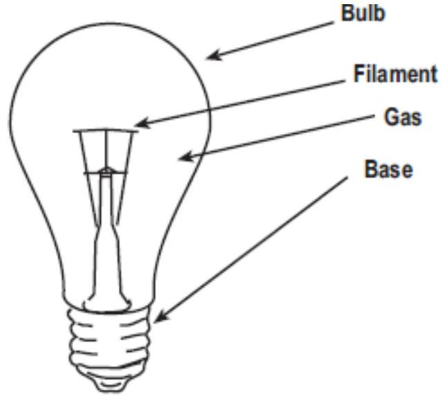
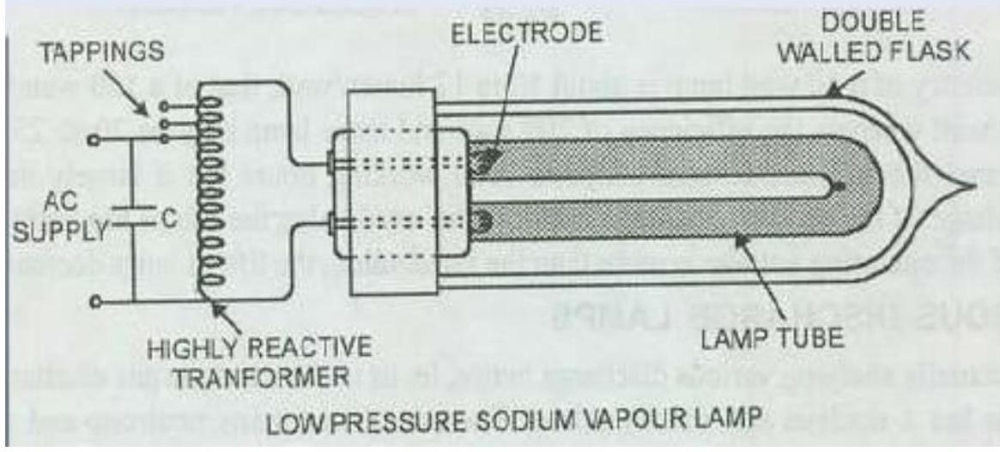
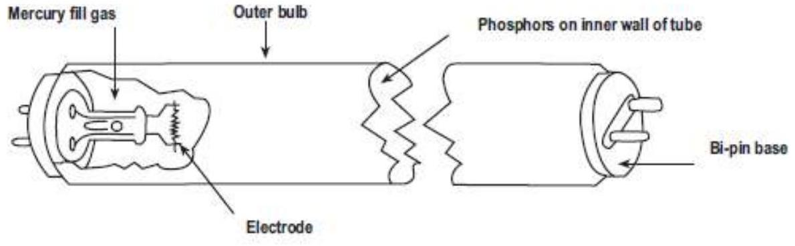
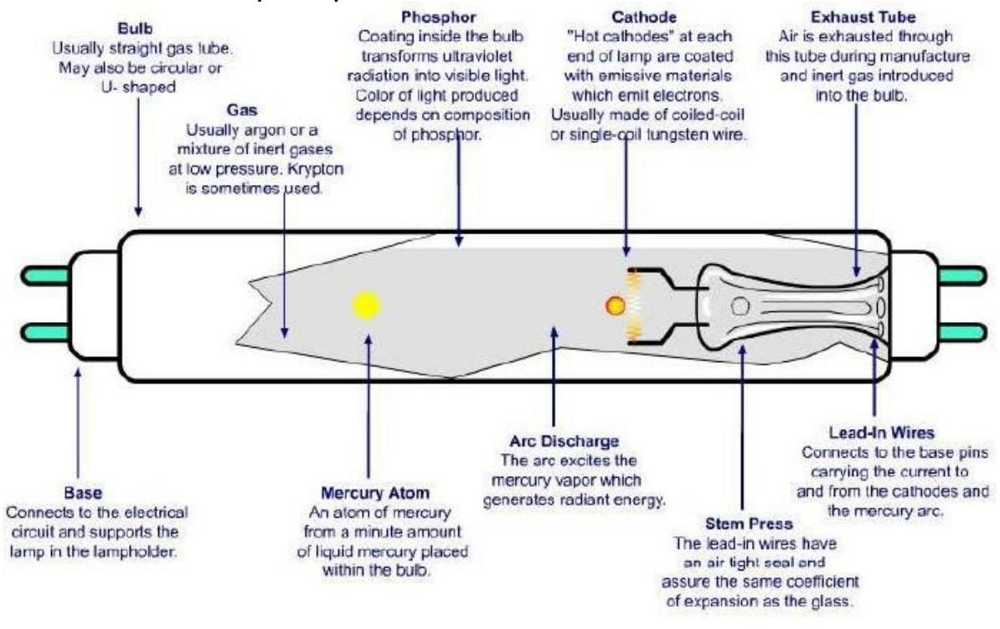
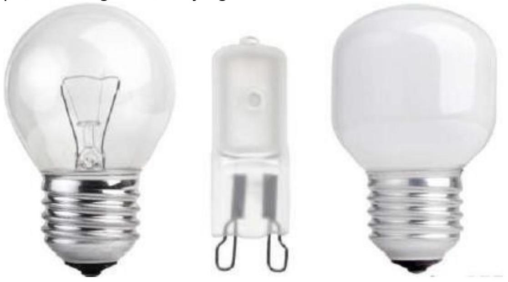

Lighting Design & Lamp Types
LIGHTING DESIGN
BZ Classification:
British Zonal Classification of 1-10 for the downward light emitted from a luminaire. The BZ class number relates to the flux that is directly incident upon the working plane in relation to the total flux emitted. BZ1 classification is for a downward directional luminaire. A BZ10 describes a luminaire that directs all its illumination upwards so that the room is illuminated by reflection from the ceiling.
Daylight Factor:
Daylight Factor: the ratio of the natural illumination on a horizontal plane within the building to that present simultaneously from an unobstructed sky, discounting direct sunlight. A standard figure of 5000 lx is adopted for the external illuminance in the United Kingdom.
Efficacy:
Efficacy: the luminous efficacy is the lamp light output in lumens per watt of electrical power consumption.
Glare:
Glare: the discomfort or impairment of vision due to excessive brightness.
Illuminance:
Illuminance: the luminous flux density at a surface in lumens per square metre, $\mathrm{l} / \mathrm{m}^{2}$, lux. The surface is normally the working plane. SI unit of illuminance; $1 \mathrm{~lx}=1 \mathrm{~lm} / \mathrm{m}^{2}$.
Luminaire:
Luminaire: the complete apparatus that contains the lamp, the light emitter and the electrical controls.
Light loss factor, LLF:
Light loss factor, LLF: the overall loss of light from the dirtiness of the lamp (0.8), luminaire (0.95) and the room surfaces (0.95). Clean conditions LLF may be 0.7 but 0.5 when equipment and room become soiled. Preferred to maintenance factor.
Maintenance factor, MF:
Maintenance factor, MF: The maintenance factor (M) is a ratio which takes into account the light lost due to an average expectation of dirtiness of light fittings and surfaces. It is an allowance for reduced light emission due to the build-up of dust on a lamp or within a luminaire. Normally 0.8 but 0.9 if the lamps are cleaned regularly or if a ventilated luminaire is used. Light loss factor is preferred.
UTILIZATION FACTOR, UF
Utilization factor, UF: the ratio of the luminous flux received at the working plane to the installed flux. Alternatively, utilisation factor ( $U$ ) is the ratio of the lumens received on the working plane to the total flux output of lamps in the lighting scheme.
The utilization factor is provided by the manufacturer and takes into account the pattern of light-distribution from the whole fitting, its light- distributing efficiency, the shape and size of the room for which it is being designed and the reflectivity of the ceiling and walls.
Values vary from 0.03, where purely indirect distribution is employed, the room has poorly reflecting surfaces and all the light is upwards onto the ceiling or walls, to 0.75 for the most energy-efficient designs. Spot lighting can have a utilization factor of nearly unity.
The configuration of the room is found from the room index: room index $=\frac{l W}{H(l+W)}$
Where $l$ is the room length ( $\mathrm{m}$ ), $W$ is the room width ( $\mathrm{m}$ ) and H is the height of the light fitting above the working plane (m).
Glare and reflections
Disability glare is when a bright light source prevents the subject from seeing the necessary detail of the task. To maximize contrast on the working plane, luminaires should be placed in rows parallel to the direction of view. The rows should be widely spaced to form work areas between them.
Enclosing the fitting with a plastic diffuser to improve its appearance usually lowers the utilization factor.
LUMEN DESIGN METHOD
The number of light fittings to be installed is found from the total lumens needed at the working plane and the illumination provided by each fitting using the formula:
OR $N=\frac{E * A}{F * I J * M}$ where
- $\mathrm{N}=$ number of lamps
- $\mathrm{E}=$ average illuminance on the working plane (lux)
- $\mathrm{A}=$ area of the working plane ($\mathrm{m}^{2}$)
- $\mathrm{F}=$ flux from one lamp (lumens)
- $\mathrm{U}=$ utilisation factor
- $\mathrm{M}=$ maintenance factor.
Spacing-height ratio
Spacing-to-height ratio (SHR) is the centre-to-centre (S) distance between adjacent luminaires to their mounting vertical height ($\mathrm{H}$) above the working plane. Manufacturers' catalogues can be consulted to determine maximum SHRs, e.g. a luminaire with trough reflector is about 1.65 and an enclosed diffuser about 1.4.
EXAMPLE:
A drawing office $16 \mathrm{~m} \times 11 \mathrm{~m}$ and 3 m high has a white ceiling and light-coloured walls. The working plane is 0.85 m above the floor. 5100 lm double-lamp luminaires are to be used and their normal spacing-to- height ratio SHR is 1.75. The illuminance required is $600 \mathrm{~lm} / \mathrm{m}^{2}$. Calculate the number of luminaires needed and draw their layout arrangement. Find the electrical power consumption of the lighting system.
SOLUTION:
A high standard of maintenance will be assumed, giving a maintenance factor of 0.9. The lighting design lumens is taken as 5100 lm for the whole light fitting.
The height $H$ of fittings above the working plane is:
From Table 11.3, for a room index of 3,
The ratio of the spacing $S$ between rows to the height $H$ above the working plane is:
Therefore,
Method of spacing fluorescent tubes
If it is assumed that windows are along one long side of the office and that rows of luminaires will be parallel to the windows, this will produce areas between rows where drawing boards and desks can be sited to gain maximum benefit from side day lighting without glare and reflection. The perimeter rows of luminaires are spaced at about half of $S$, 1.74 m, from the side walls.
Table 11.3 Utilization factors for a bare fluorescent tube fitting with two 58 W 1500 mm lamps (%).
| Luminance factors | Room index | |||||||||
|---|---|---|---|---|---|---|---|---|---|---|
| Ceiling | Walls | 0.75 | 1 | 1.25 | 1.5 | 2 | 2.5 | 3 | 4 | 5 |
| 70 | 50 | 48 | 53 | 59 | 64 | 71 | 75 | 79 | 83 | 86 |
| 70 | 30 | 40 | 46 | 51 | 57 | 64 | 69 | 73 | 78 | 82 |
| 70 | 10 | 35 | 40 | 46 | 51 | 59 | 64 | 68 | 74 | 78 |
| 50 | 50 | 43 | 48 | 52 | 57 | 63 | 67 | 70 | 74 | 76 |
| 50 | 30 | 37 | 41 | 46 | 51 | 57 | 62 | 65 | 70 | 73 |
| 50 | 10 | 33 | 37 | 42 | 46 | 53 | 58 | 61 | 67 | 70 |
| 30 | 50 | 39 | 42 | 46 | 50 | 55 | 59 | 61 | 65 | 67 |
| 30 | 30 | 34 | 37 | 42 | 46 | 51 | 55 | 58 | 62 | 65 |
| 30 | 10 | 30 | 33 | 38 | 42 | 48 | 52 | 55 | 59 | 62 |
Three rows of 10 luminaires are required, as shown in Fig. below, giving 30 luminaires and a slightly increased illuminance.
The electrical power consumption of each luminaire is 140 W . For the room the power consumption will be $30 \times 140 \mathrm{~W}$, that is, 4200 W , which is:
LIGHTING SCHEMES
Fittings for lighting may be considered in three categories:
- General utility -designed to be effective, functional and economic.
- Special -usually provided with optical arrangements such as lenses or reflectors to give directional lighting.
- Decorative -designed to be aesthetically pleasing or to provide a feature, rather than to be functional.
Lighting schemes are classified according to the location, requirement and purpose etc. as under:
- Direct lighting
- Indirect lighting
- Semi direct lighting
- Semi indirect lighting
- General lighting
From an optical perspective, the fitting should obscure the lamp from the discomfort of direct vision to reduce the impact of glare. The various lighting schemes are illustrated
TYPES OF INCANDESCENT LAMPS
ARC LAMPS
The principle of an arc lamp is that when two electrodes carrying current are separated through a small distance, an arc is struck between them. The arc lamps were used in the past for street lighting purposes but now a day these are used when extreme brightness is required. Most commonly use arc lamp is the Carbon Arc Lamp
Carbon Arc Lamp
This is the oldest type of lamp and is still being employed in cinema projectors and search lights. It consists of two hard carbon rods (Electrodes). The diameter of +ve electrode is double to that of -ve electrode. The -ve electrode is generally fixed and +ve electrode is placed in adjustable holder and the process is manually or automatic. The arc consists of carbon vapors surrounded by orange red zone of burning carbon and pale green flames.
When the lamp is OFF, the two electrodes are touching each other due to spring pressure on + ve electrode. When the supply is ON a large current is flow through electrodes. The temperature of carbon electrode is increased and thus the +ve electrode is pulled away against its spring pressure through a small distance by coil and thus an arc is struck between electrodes. This arc is maintained by transfer of carbon particles from one electrode to other electrode. These particles travel from + ve electrode to - ve electrode, thus after sometime of operation +ve electrode become hollow and -ve become pointed. That's why +ve electrode is made double than -ve electrode.
In carbon arc lamp 85% of light is given by +ve electrode which produces high intensity light and only 10 % by -ve electrode and 5 % by air. The temperature of +ve electrode is 4000 \text { oC } and that of ve electrode is about 2500 \text { oC }. The luminous efficiency of such lamps is about 9 lumen/watt.
FILAMENT OR INCANDESCENT LAMP
When an electric current is passed through a fine metallic wire, it raises the temperature of wire. At low temperature only heat is produced but at higher temperature light radiations goes on increasing. As filament lamp consists of fine wire of high resistive material placed in an evacuated glass bulb.
Construction of a typical incandescent lamp.
A tungsten filament is enclosed in evacuated glass bulb but to improve its performance some inert gases like argon/exenon gas are filled.
This type of lamps are operated at the temperature of 2500 ${ }^{\circ} \mathrm{C}$.
Properties of Metal for Filament
- High melting point : so that it can be operated at high temperature.
- High specific resistance : so that it produces more heat.
- Low temperature coefficient : so that filament resistance may not change at operating temperature.
- Low vapor pressure ; so that it may not vaporize
- High ductile : so that it may withstand mechanical vibrations
|Page
SODIUM VAPOR LAMP
This lamp consists of discharge tube made from special heat resistance glass, containing a small amount of metallic sodium, neon gas and two electrodes. Neon gas is added to start the discharge and to develop enough heat to vaporised sodium. A long tube is required to get more light. To reduce overall dimensions of the lamp, the tube is generally bent into U-shape.
Working Principle:
An electric discharge lamps require a high voltage at staring and low voltage during operation. So at starting a voltage of 450 V is applied across the lamp to start the discharge.
After 10 to 15 minutes, the voltage falls to 150 V because of low power factor. To improve the power factor a capacitor is connected across the supply. The color of light produce is yellowish.
Sodium Vapor Lamp
FLUORESCENT LAMPS
It is a low pressure mercury vapor lamp. It consists of a glass tube 25 mm in diameter and $0.6 \mathrm{~m}, 1.2 \mathrm{~m}$ and 1.5 m in length. The tube contains argon gas at low pressure about 2.5 mm of mercury. At the two ends, two electrodes coated with some electron emissive material are placed.
Construction of a linear fluorescent lamp.
Working :
A choke is connected in series with the tube which act as a blast and provide a high voltage at starting glow in the tube. During running condition the same choke absorbs some supply voltage and remain a voltage of 110 V across the tube. A capacitor is connected to improve the power factor. The high voltage produce electrons which hit mercury atoms on their path through the discharge tube. Upon collision, the mercury atoms are shortly excited. The absorbed shock energy is immediately released in the form of invisible UV radiation. The UV radiations produced fall on the fluorescent phosphor-coated inner walls of the tube
Advantages of Fluorescent Tube
- Voltage fluctuation has very small effect on light output.
- The luminous efficiency is more as length of rod is more.
- It gives light close to natural light.
- Heat radiations are negligible.
Disadvantages of Fluorescent Tube
- Its brightness is less.
- Initial cost is high
- Overall maintenance cost is high.
NEON LAMP
These lamps are operated at a very low temperature of about 200 \text { oC } that's why these are called cold cathode discharge lamps.
Two electrodes are housed at the two ends of the tube which contain neon gas. The electrodes are made of iron or nickel cylinder without any coating and practically they do not emit electrons. It gives red light whereas with mixture of mercury and argon it gives bluish green color. Voltage require for starting and operation is 10000 V . This high voltage is obtained from transformer.
Working :
When the supply is switched ON at primary side of transformer, a voltage of 10000 V develops across secondary side which come across two electrodes. At this voltage a discharge occurs in neon gas. Different colors can be obtained by changing the constituents of gases and mercury filled in the tubes.
Applications the Neon Lamp:
Neon lamps are generally used for advertising. Most of letters having two ends at which electrodes are placed. In letter having more than two ends, the tube path is repeated for some portion.
HALOGEN LAMP
Halogen lamp is a special type of tungsten filament lamp which was developed in 1959, in this lams, a small amount of halogen vapor is added to the inert gas of the bulb. Its glass bulb is small in size and mechanically strong. It operates at high temperature of $3000^{\circ} \mathrm{C}$. When the supply is given to the lamp, a filament glows and produce light. The halogen in addition to inert gas causes the evaporated tungsten to resettle back on the filament during cooling, that's why lamp can be operated at high temperature. It provides high intensity light.
Advantages of Halogen Lamp
- It is smaller in size.
- It does not need any blast.
- Good colors can be obtained.
- Excellent optical control.
- Gives same output throughout life
- It has long life
Disadvantages of Halogen Lamp
- During maintenance the handling of lamp is difficult.
- Radiant heat is more which heats the surroundings.
- Operating temperature is high which effects its life.